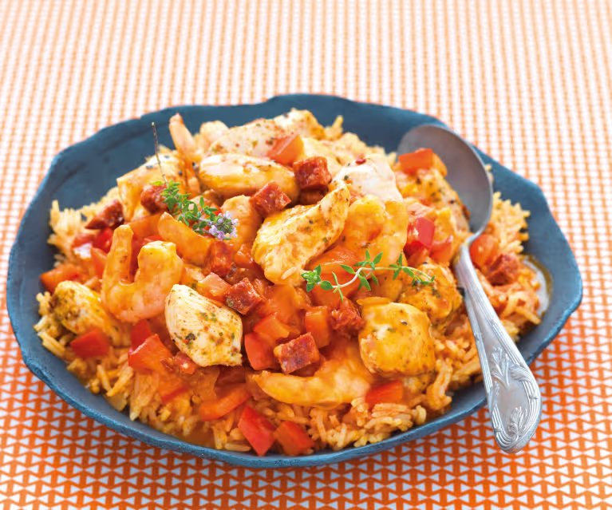

Jambalaya de poulet
Ingrédients
- 300 g de filets de poulet
- 2 c. à s. d'épices cajun
- 200 g de crevettes crues décortiquées
- 120 g d'oignons
- 20 g d'huile d'olive
- 100 g de chorizo doux
- 200 g de poivron rouge
- 600 g d'eau
- 1 cube de bouillon de poule
- 400 g de tomates concassées
- 0.5 c. à c. de sel
- 3 pincées de poivre blanc
- 250 g de riz basmati

Préparation
Étape 1
Mélanger 300 g de filets de poulet en cubes avec 2 c. à s. d'épices cajun. Mettre dans le Varoma avec 200 g de crevettes crues décortiquées.
Étape 2
Mettre 120 g d'oignons dans le bol et hacher 5 sec/vitesse 5.
Étape 3
Ajouter 20 g d'huile d'olive, 100 g de chorizo doux en dés et 200 g de poivron rouge en dés, rissoler 4 min/120ºC/sens inverse/vitesse mijotage sans le gobelet.
Étape 4
Ajouter 600 g d'eau, 1 cube de bouillon de poule, 400 g de tomates concassées, 0.5 c. à c. de sel et 3 pincées de poivre blanc. Rincer 250 g de riz basmati dans le panier cuisson et l’insérer.
Étape 5
Mettre le Varoma en place et cuire à la vapeur 20 min/Varoma/sens inverse/vitesse 1.
Étape 6
Mettre riz, poulet et crevettes dans un plat, napper de sauce et laisser reposer 5min avant de servir.